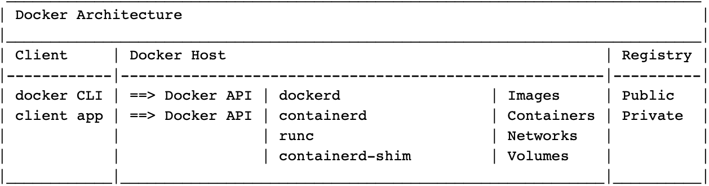
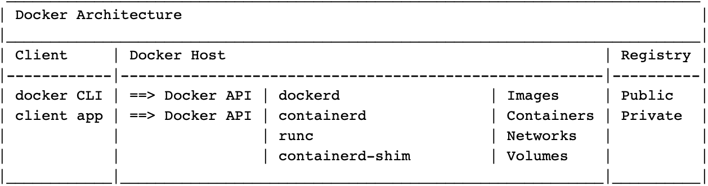

Docker

[source: https://containerd.io]

[source: https://containerd.io]

- Install Docker Engine (Ubuntu)
- Install Docker Desktop (Windows)
- Working with Docker Images
- Working with Containers
- Clear Docker Unused Objects
References

Books